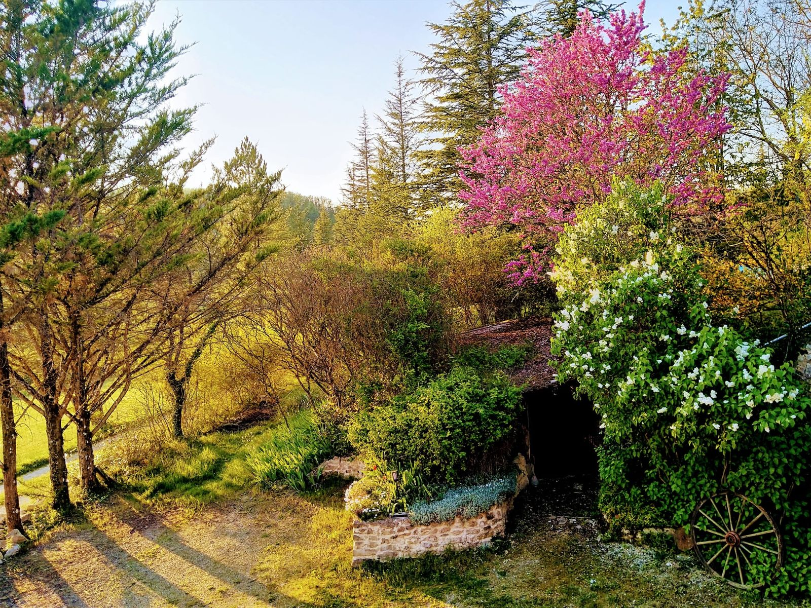
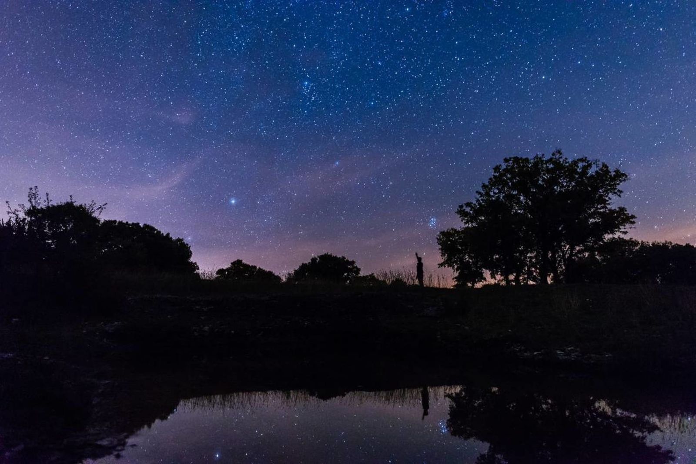
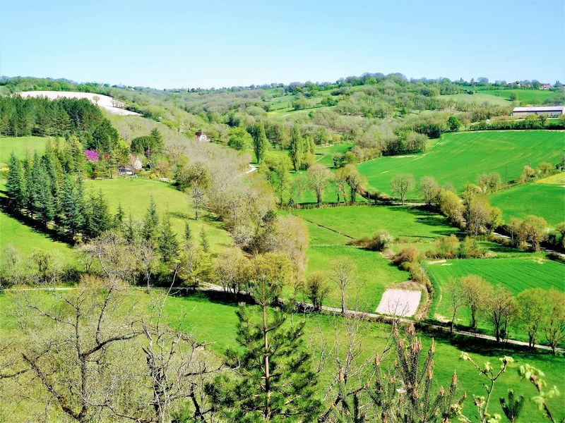
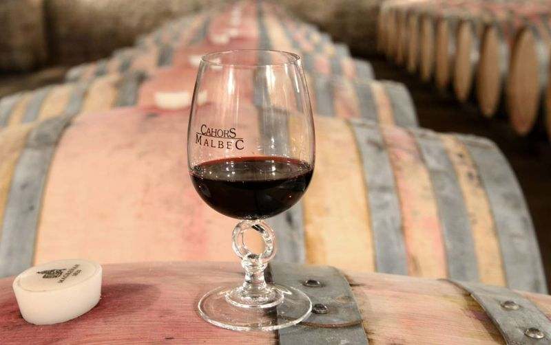
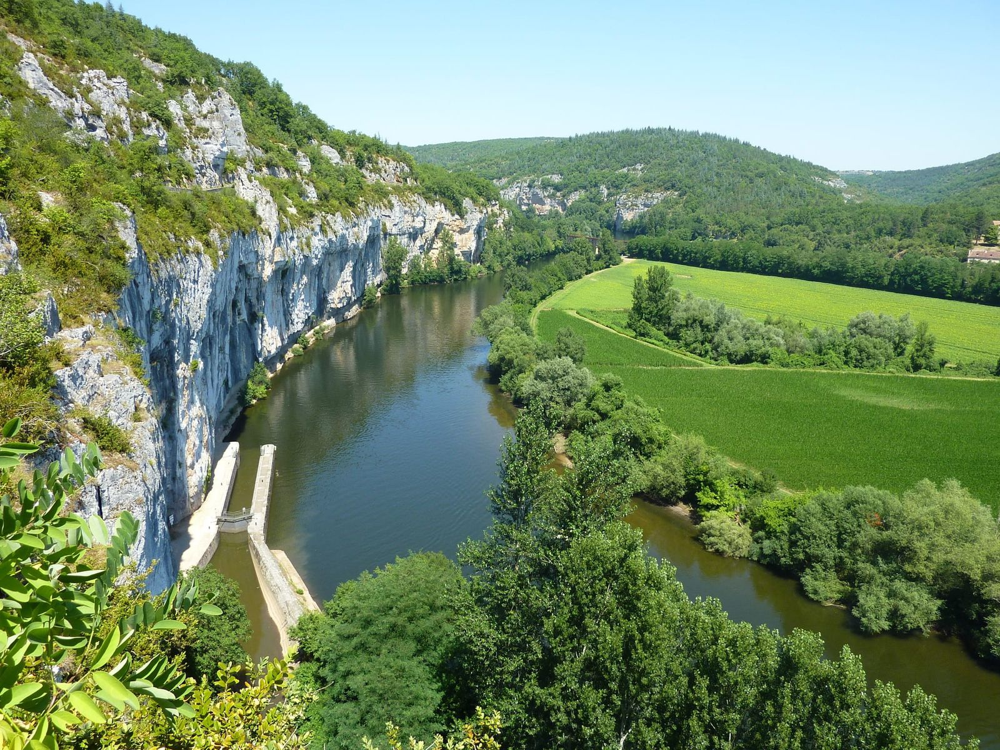

Au cœur géographique du Lot, à la frontière de la Dordogne
C’est une maison (pas bleue) adossée à la colline. Dans une véritable oasis de
tranquillité, la bergerie quercynoise en pierre des causses, avec
son pigeonnier, offre aux amoureux de la nature un confort sans pareil depuis sa
rénovation en 2017.
Elle abrite deux gîtes de 85 m², K et P, qui ne diffèrent que par
leur agencement. Chacun s’étage sur deux niveaux, avec son accès indépendant et sa
terrasse privée sans vis-à-vis. Réunis, ils accueillent jusqu’à
10 personnes.
Gourdon est à 10 km, Rocamadour à 17 km, Sarlat à 25 km, et la sortie 56 de l’A20
à 10 minutes : la base idéale pour rayonner entre Lot et Dordogne.
P
Les propriétaires vivent sur place, dans une autre maison du domaine :
aux petits soins, mais très discrets.
Philippe, votre hôte · Gîtes Cœur de Lot
Les espaces
Les équipements des gîtes
WiFi gratuit et illimité
Piscine
Barbecue et plancha
Terrasse extérieure privative
Buanderie, lave-linge et sèche-linge
Pinède privée
…
Nous trouver
Lacal, 46300 Soucirac. L’affichage de la carte dépose des cookies Google.
Les gîtes
Deux gîtes, une seule différence : l’agencement
Même superficie, même confort, chacun sur deux étages avec accès indépendant et
terrasse privée. Le K pour les couples, le P pour les familles, et les deux réunis
pour 10 personnes.
Idéal pour un couple
Gîte « K »
85 m² · 5 personnes · 1 chambre · 2 étages
Une chambre avec lit queen size et une grande pièce de vie sous la charpente : cuisine, salon et salle à manger réunis.
85 m²
5 personnes
Lit queen size 160
Grande pièce de vie
Terrasse privée
Tarifs et disponibilités en direct4,6/526 avis Google
Idéal pour une famille
Gîte « P »
85 m² · 5 personnes · 2 chambres · 2 étages
Deux chambres, dont une avec salle de bain, et des pièces séparées : cuisine et salle à manger d’un côté, salon TV et chambre enfants de l’autre.
85 m²
5 personnes
2 chambres
Jardin privé
Pièces séparées
Tarifs et disponibilités en direct4,6/526 avis Google
Jusqu’à 10 personnes
Gîte « P + K »
170 m² · 10 personnes · 3 chambres · les deux gîtes
Les deux gîtes ensemble, pour les grandes réunions de famille ou d’amis : 170 m² et jusqu’à 10 personnes.
170 m²
10 personnes
3 chambres
Les deux gîtes
Réunions de famille
Tarifs et disponibilités en direct4,6/526 avis Google
Idéal pour un couple
Gîte « K »
85 m² · 5 personnes · 1 chambre · 2 étages
Une chambre avec lit queen size et une grande pièce de vie sous la charpente : cuisine, salon et salle à manger réunis.
85 m²
5 personnes
Lit queen size 160
Grande pièce de vie
Terrasse privée
Tarifs et disponibilités en direct4,6/526 avis Google
Idéal pour une famille
Gîte « P »
85 m² · 5 personnes · 2 chambres · 2 étages
Deux chambres, dont une avec salle de bain, et des pièces séparées : cuisine et salle à manger d’un côté, salon TV et chambre enfants de l’autre.
85 m²
5 personnes
2 chambres
Jardin privé
Pièces séparées
Tarifs et disponibilités en direct4,6/526 avis Google
Jusqu’à 10 personnes
Gîte « P + K »
170 m² · 10 personnes · 3 chambres · les deux gîtes
Les deux gîtes ensemble, pour les grandes réunions de famille ou d’amis : 170 m² et jusqu’à 10 personnes.
170 m²
10 personnes
3 chambres
Les deux gîtes
Réunions de famille
Tarifs et disponibilités en direct4,6/526 avis Google
Idéal pour un couple
Gîte « K »
85 m² · 5 personnes · 1 chambre · 2 étages
Une chambre avec lit queen size et une grande pièce de vie sous la charpente : cuisine, salon et salle à manger réunis.
85 m²
5 personnes
Lit queen size 160
Grande pièce de vie
Terrasse privée
Tarifs et disponibilités en direct4,6/526 avis Google
Idéal pour une famille
Gîte « P »
85 m² · 5 personnes · 2 chambres · 2 étages
Deux chambres, dont une avec salle de bain, et des pièces séparées : cuisine et salle à manger d’un côté, salon TV et chambre enfants de l’autre.
85 m²
5 personnes
2 chambres
Jardin privé
Pièces séparées
Tarifs et disponibilités en direct4,6/526 avis Google
Jusqu’à 10 personnes
Gîte « P + K »
170 m² · 10 personnes · 3 chambres · les deux gîtes
Les deux gîtes ensemble, pour les grandes réunions de famille ou d’amis : 170 m² et jusqu’à 10 personnes.
170 m²
10 personnes
3 chambres
Les deux gîtes
Réunions de famille
Tarifs et disponibilités en direct4,6/526 avis Google
Le domaine
Cinq hectares de nature, rien que pour deux gîtes
Une pinède avec sa clairière, de nombreux prés et une grande piscine dans un écrin de verdure, sans vis-à-vis ni nuisances. Le calme est inédit, le cadre enchanteur. Les propriétaires vivent sur place : aux petits soins, mais très discrets.
5 hade pinède et de prés
12 × 6 mde piscine, sans vis-à-vis
2 gîtesseulement, beaucoup d’intimité
Ciel noirl’un des derniers « triangles noirs » de France
Les animaux ne sont pas admis.


Galerie
La bergerie, les gîtes et le domaine
Cliquez sur une photo pour l’agrandir.
Avis clients
Ils ont séjourné à Cœur de Lot
Véritable coup de cœur pour ce gîte !
« Amoureux de la nature ? Foncez découvrir ce petit bout de paradis : un immense terrain boisé, de la lavande, des fleurs sauvages et avec pour seuls bruits le vrombissement des ailes des abeilles qui butinent ! De jolies terrasses pour manger dehors, une très belle piscine pour se rafraîchir, tout le confort dont vous avez besoin. »
Chloé, France · Airbnb
Un petit coin de paradis
« Superbe maison indépendante toute rénovée avec des équipements modernes. Propreté irréprochable. Décoration raffinée. Excellente literie. Grande piscine. 5 hectares de champs, de pinède, de quiétude. Le soir et le matin nous avons droit au spectacle de la faune locale (merci à la biche et son faon). »
Gilles, Fontainebleau
Luxe, calme et tranquillité en pleine nature
« L’emplacement en pleine nature au calme et près des lieux incontournables du Lot. Les bons conseils de Philippe le propriétaire et les petites attentions quotidiennes. La décoration du gîte magnifique et tous les équipements mis à disposition. La piscine très agréable. »
Karine, Andorre · Booking.com
Fantastique
« Accueil fantastique (merci Philippe !) situation parfaite, au calme mais à distance très raisonnable de tous les points d’intérêt. Parfait pour une semaine comme pour un week-end. »
Yannick, France · Booking.com
Quelques jours dans le Lot
« Le gîte est superbe. Nous cherchions le calme et l’authenticité. Les deux sont au rendez-vous. L’emplacement est central entre le Lot et la Dordogne, bon point de départ pour les randonnées et visites magiques (châteaux, jardins, grottes, cours d’eau). »
Michaël, Belgique · Booking.com
Lieu magique
« Lieu magique dans un gîte absolument exceptionnel. Notre hôte, Philippe, est aux petits soins et particulièrement adorable. Je recommande. »
Nathalie · Google
Endroit superbe, idéalement situé
« Piscine exceptionnelle, gîte très agréable et l’extérieur superbe ! Philippe est à l’écoute, soucieux du bien-être de ses hôtes, très sympathique tout en étant très discret ! »
Mathilde, France · Airbnb
Amazing and peaceful
« Amazing and peaceful location, beautiful pool, extremely comfortable and stylishly decorated gite. Charming hosts. We couldn’t have asked for anything more. »
Georgina, London
Excellent séjour
« Nous avons passé un excellent séjour dans le gîte, le jardin est magnifique et la literie est extra : je recommande ! Merci beaucoup à Philippe le propriétaire pour sa gentillesse. »
Jérôme, France · Facebook
Lieu plein de charme en pleine nature
« Gîtes super équipés, très propres et literie très confortable. Hôte aux petits soins pour ses locataires ! Adresse à garder ! »
Magali, France · Facebook
Véritable coup de cœur pour ce gîte !
« Amoureux de la nature ? Foncez découvrir ce petit bout de paradis : un immense terrain boisé, de la lavande, des fleurs sauvages et avec pour seuls bruits le vrombissement des ailes des abeilles qui butinent ! De jolies terrasses pour manger dehors, une très belle piscine pour se rafraîchir, tout le confort dont vous avez besoin. »
Chloé, France · Airbnb
Un petit coin de paradis
« Superbe maison indépendante toute rénovée avec des équipements modernes. Propreté irréprochable. Décoration raffinée. Excellente literie. Grande piscine. 5 hectares de champs, de pinède, de quiétude. Le soir et le matin nous avons droit au spectacle de la faune locale (merci à la biche et son faon). »
Gilles, Fontainebleau
Luxe, calme et tranquillité en pleine nature
« L’emplacement en pleine nature au calme et près des lieux incontournables du Lot. Les bons conseils de Philippe le propriétaire et les petites attentions quotidiennes. La décoration du gîte magnifique et tous les équipements mis à disposition. La piscine très agréable. »
Karine, Andorre · Booking.com
Fantastique
« Accueil fantastique (merci Philippe !) situation parfaite, au calme mais à distance très raisonnable de tous les points d’intérêt. Parfait pour une semaine comme pour un week-end. »
Yannick, France · Booking.com
Quelques jours dans le Lot
« Le gîte est superbe. Nous cherchions le calme et l’authenticité. Les deux sont au rendez-vous. L’emplacement est central entre le Lot et la Dordogne, bon point de départ pour les randonnées et visites magiques (châteaux, jardins, grottes, cours d’eau). »
Michaël, Belgique · Booking.com
Lieu magique
« Lieu magique dans un gîte absolument exceptionnel. Notre hôte, Philippe, est aux petits soins et particulièrement adorable. Je recommande. »
Nathalie · Google
Endroit superbe, idéalement situé
« Piscine exceptionnelle, gîte très agréable et l’extérieur superbe ! Philippe est à l’écoute, soucieux du bien-être de ses hôtes, très sympathique tout en étant très discret ! »
Mathilde, France · Airbnb
Amazing and peaceful
« Amazing and peaceful location, beautiful pool, extremely comfortable and stylishly decorated gite. Charming hosts. We couldn’t have asked for anything more. »
Georgina, London
Excellent séjour
« Nous avons passé un excellent séjour dans le gîte, le jardin est magnifique et la literie est extra : je recommande ! Merci beaucoup à Philippe le propriétaire pour sa gentillesse. »
Jérôme, France · Facebook
Lieu plein de charme en pleine nature
« Gîtes super équipés, très propres et literie très confortable. Hôte aux petits soins pour ses locataires ! Adresse à garder ! »
Magali, France · Facebook
Les activités
Le Lot et la Dordogne, au départ des gîtes
Au cœur du Parc naturel régional des Causses du Quercy, classé Géoparc par l’UNESCO :
villages préférés des Français, gouffres et grottes, rivières et tables du Sud-Ouest.
Villages et cités
Saint-Cirq-Lapopie, La Roque-Gageac, Rocamadour : trois villages préférés des Français
Grottes et gouffres
Padirac, Lacave, Pech Merle : le Lot sous la terre

Nature et plein air
Canoë sur la Dordogne, randonnée sur le GR, balades à cheval

Gastronomie
Vins de Cahors, truffe, foie gras et fromage de Rocamadour
Villages et cités
Saint-Cirq-Lapopie, La Roque-Gageac, Rocamadour : trois villages préférés des Français
Grottes et gouffres
Padirac, Lacave, Pech Merle : le Lot sous la terre
Nature et plein air
Canoë sur la Dordogne, randonnée sur le GR, balades à cheval
Gastronomie
Vins de Cahors, truffe, foie gras et fromage de Rocamadour
Villages et cités
Saint-Cirq-Lapopie, La Roque-Gageac, Rocamadour : trois villages préférés des Français
Grottes et gouffres
Padirac, Lacave, Pech Merle : le Lot sous la terre
Nature et plein air
Canoë sur la Dordogne, randonnée sur le GR, balades à cheval
Gastronomie
Vins de Cahors, truffe, foie gras et fromage de Rocamadour
Contact
Contactez les Gîtes Cœur de Lot
Pour une réservation ou une simple question, appelez-nous ou écrivez-nous :
les propriétaires vivent sur place.
Se reposer au bord de l’eau après une belle journée d’excursion.
Une grande piscine de 12 × 6 m, dans un écrin de verdure sans vis-à-vis.
Ce qui vous attend
12 × 6 mUne grande et belle piscine, en accès direct.
Sans vis-à-vis ni nuisancesDans un écrin de verdure.
Transats et chaises longuesSur la plage de la piscine.
En quelques mots
Un accès direct à une grande et belle piscine de 12 × 6 m, dans un écrin de verdure sans vis-à-vis ni nuisances : le lieu idéal pour se reposer de belles journées d’excursion dans les proches environs.
Transats et chaises longues attendent sur la plage de la piscine.
En direct avec les propriétaires, qui vivent sur place · Classé 4 étoiles
Pièces de vie et cuisines
Cuisiner autour de l’îlot, puis passer la soirée sous la charpente.
Charpente apparente, cuisines suréquipées avec îlot central, bibliothèque et filmothèque.
Ce qui vous attend
Une grande pièce de vie au gîte KCuisine, salon TV et salle à manger réunis.
Des pièces séparées au gîte PCuisine et salle à manger, salon TV et chambre enfants.
Des cuisines suréquipéesÎlot central et électroménager très récent, barbecue et plancha dehors.
De quoi occuper les soiréesTV satellite, filmothèque, bibliothèque, jeux de société.
En quelques mots
Les deux gîtes ont la même superficie, seul l’agencement change. Le K réunit cuisine, salon TV et salle à manger dans une grande pièce de vie ; le P sépare la cuisine et la salle à manger du salon TV et de la chambre des enfants.
Dans chacun : une cuisine suréquipée avec îlot central et électroménager très récent, écran plat et TV satellite, filmothèque, bibliothèque et jeux de société. Pour les beaux jours, barbecue et plancha attendent sur la terrasse.
En direct avec les propriétaires, qui vivent sur place · Classé 4 étoiles
Les chambres
Des nuits calmes, sur une literie neuve.
Couchages neufs et excellente literie, sous les poutres.
Ce qui vous attend
Couchages neufsUne literie que les voyageurs saluent dans leurs avis.
Un lit queen size au gîte K160 cm, et un canapé convertible dans la pièce de vie.
Deux chambres au gîte PUn lit de 140 dans chacune, dont une avec salle de bain.
En quelques mots
Couchages neufs dans les deux gîtes : une chambre avec lit queen size au gîte K, deux chambres avec lit de 140 au gîte P, dont une avec sa salle de bain. Salles de bain avec douche à l’italienne.
En direct avec les propriétaires, qui vivent sur place · Classé 4 étoiles
Terrasses et jardins
Le dîner dehors, puis le coucher de soleil.
Terrasse privée sans vis-à-vis, salon de jardin et barbecue.
Ce qui vous attend
Une terrasse privée par gîteAvec salon et barbecue, sans vis-à-vis.
Un jardin privatifAvec mobilier de jardin.
Les fauteuils AdirondackDeux au jardin du gîte P, pour le coucher de soleil.
En quelques mots
Chaque gîte a sa terrasse privée sans vis-à-vis, avec salon et barbecue, et son jardin privatif meublé. Au gîte P : une table, quatre chaises, un grand parasol déporté et deux fauteuils Adirondack pour le coucher de soleil.
En direct avec les propriétaires, qui vivent sur place · Classé 4 étoiles
Gîte « K »
Une grande pièce de vie sous la charpente, pour deux ou pour toute la famille.
85 m² · 5 personnes · 1 chambre · 2 étages
Tarifs sur demande4,6/526 avis Google
Ce qui vous attend
Pensé pour les couplesUne chambre avec un lit queen size de 160, et une pièce de vie plus vaste.
Jusqu’à 5 personnesLe canapé convertible 140 et le matelas futon 140 accueillent la famille.
Deux accès indépendants85 m² sur deux étages, avec terrasse privée sans vis-à-vis.
Rénové en 2017Électroménager très récent, couchages neufs, douche à l’italienne.
Le gîte
Le gîte K offre une chambre avec un lit queen size de 160 et une grande pièce de vie, avec canapé convertible 140 et matelas futon 140, qui réunit la cuisine, le salon TV et la salle à manger.
85 m² sur deux étages, avec deux accès indépendants. La cuisine suréquipée s’organise autour d’un îlot central, la salle de bain a une douche à l’italienne. Dehors, une terrasse privée avec salon et barbecue.
Une véritable oasis de tranquillité pour les amoureux de la nature, dans la bergerie quercynoise en pierre des causses avec pigeonnier, rénovée en 2017.
Pinède privée pour pique-nique, randonnée, champignons
Buanderie : machines à laver et sèche-linge
Transats et chaises longues pour la plage de la piscine
Réserver
Réservation en direct auprès des propriétaires, par téléphone ou par email
Accès parking réservé
Les animaux ne sont pas admis
En direct avec les propriétaires, qui vivent sur place · Classé 4 étoiles
Gîte « P »
Deux chambres, des pièces séparées, et deux fauteuils pour le coucher de soleil.
85 m² · 5 personnes · 2 chambres · 2 étages
Tarifs sur demande4,6/526 avis Google
Ce qui vous attend
Pensé pour les famillesDeux chambres avec un lit de 140 dans chacune.
Une suite parentaleL’une des chambres a sa salle de bain.
Un coin pour les enfantsSalon TV, bibliothèque, ludothèque et sofa.
Un jardin privéTable, parasol déporté et deux fauteuils Adirondack face au couchant.
Le gîte
Le gîte P propose deux chambres avec un lit de 140 dans chacune : l’une a sa salle de bain, l’autre s’ouvre sur un salon TV avec bibliothèque, ludothèque et sofa. La cuisine et la salle à manger occupent leurs propres pièces.
85 m² sur deux étages, avec accès indépendant et jardin privé : une table et quatre chaises, un grand parasol déporté et deux fauteuils Adirondack pour le coucher de soleil.
Cuisine suréquipée avec îlot central, salle de bain avec douche à l’italienne, électroménager très récent et couchages neufs, dans la bergerie en pierre des causses rénovée en 2017.
Les lits
Chambre 11 lit double (140), salle de bain attenante
Chambre 21 lit double (140), avec salon TV, bibliothèque et ludothèque
Pinède privée pour pique-nique, randonnée, champignons
Buanderie : machines à laver et sèche-linge
Transats et chaises longues pour la plage de la piscine
Réserver
Réservation en direct auprès des propriétaires, par téléphone ou par email
Accès parking réservé
Les animaux ne sont pas admis
En direct avec les propriétaires, qui vivent sur place · Classé 4 étoiles
Gîte « P + K »
Les deux gîtes rien que pour vous, en famille ou entre amis.
170 m² · 10 personnes · 3 chambres · les deux gîtes
Tarifs sur demande4,6/526 avis Google
Ce qui vous attend
Jusqu’à 10 personnesLes gîtes K et P réunis, soit 170 m².
Et au-delà ?Contactez-nous : le camping est possible dans la pinède, une tente deux personnes est fournie.
Les propriétaires sur placeIls vivent dans une autre maison du domaine.
Beaucoup d’intimitéDeux gîtes seulement sur la propriété.
Le gîte
L’option idéale pour les grandes réunions de famille ou d’amis : nos deux gîtes réunis, K et P, portent la capacité à 10 personnes.
Vous êtes plus nombreux ? Contactez-nous : nous avons par exemple des possibilités de camping dans notre pinède privée et fournissons une tente deux personnes.
Les propriétaires vivent sur place, dans une autre maison.
Pinède privée pour pique-nique, randonnée, champignons
Buanderie : machines à laver et sèche-linge
Transats et chaises longues pour la plage de la piscine
Réserver
Réservation en direct auprès des propriétaires, par téléphone ou par email
Accès parking réservé
Les animaux ne sont pas admis
En direct avec les propriétaires, qui vivent sur place · Classé 4 étoiles
Galerie photo : Gîtes Cœur de Lot, Soucirac
Villages et cités autour de Soucirac

Villages et cités
Au cœur géographique du Lot et à la frontière de la Dordogne, les gîtes sont la base idéale pour rayonner. Trois des villages « préférés des Français » selon France 2 sont dans les proches environs : Saint-Cirq-Lapopie, La Roque-Gageac et Rocamadour.
Nos idées de sorties
Gourdon
Sous-préfecture·10 km
La sous-préfecture et la gare SNCF de la ligne Paris-Toulouse.
En direct avec les propriétaires, qui vivent sur place · Classé 4 étoiles
Nature et plein air autour de Soucirac
Nature et plein air
La propriété se situe dans le Parc naturel régional des Causses du Quercy, classé Géoparc par l’UNESCO (il n’y en a que 5 en France) : pelouses à orchidées, forêts de chênes, vallées verdoyantes bordées de falaises.
Nos idées de sorties
La vallée de la Dordogne
Canoë-kayak
Une journée de canoë-kayak au milieu des châteaux médiévaux.
En direct avec les propriétaires, qui vivent sur place · Classé 4 étoiles
Gastronomie autour de Soucirac
Gastronomie
Les gastronomes seront comblés par les spécialités du Sud-Ouest. Région viticole parmi les plus anciennes de France, le Quercy est aussi le royaume de la truffe.